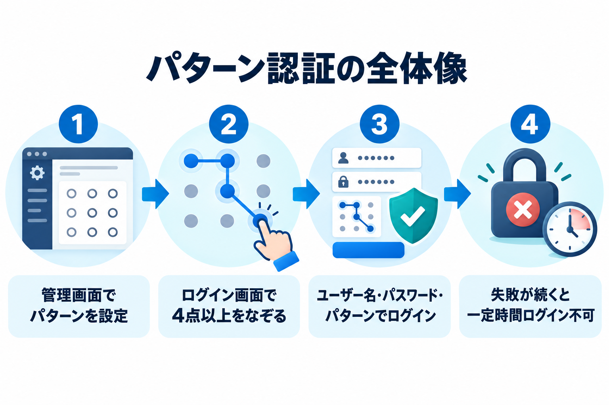

Kashiwazaki Pattern Lock マニュアル

WordPress 標準のログイン画面に、9点のうち4点以上をなぞるパターン入力を追加するプラグインです。ユーザー名・パスワード・パターンの3つがそろったときだけログインできます。
主要機能
9点パターンでログイン
ログイン画面に3×3の9点が表示されます。マウスや指でなぞるか、キーボードで選んでパターンを入力します。
管理画面で設定
サイト共通のパターンを1つ決めます。確認のため2回入力し、変更や解除も管理画面から行えます。
連続失敗を制限
認証の失敗が続くと、一定時間ログインを受け付けません。回数と時間は管理画面で変えられます。

できること
- WordPress 標準のログイン画面に、9点のパターン入力欄（4点以上で入力）を自動で表示します（ショートコードは不要です）。
- PC ではマウス、スマートフォンやタブレットでは指でなぞって入力できます。
- キーボードでも入力できます（矢印キーで移動、Space または Enter で選択）。
- 選んだ点と、点を結ぶ線が画面に表示されます。入力を消してやり直せます。
- パターンは4点以上。同じ点は1つのパターン内で1回だけ使えます。
- 飛び越えた点がある場合は、途中の点も選ばれたものとして扱われます。
- パターンを忘れた場合に備え、プラグインを無効化して元に戻す手順を用意しています。
画面の地図
このマニュアルで説明している画面は、次のとおりです。
- ログイン画面のパターン入力 — 利用者がログインするときに使う画面です。
- 管理画面：初期設定 — はじめてパターンを決めるときの画面です。
- 管理画面：設定済み — 設定の確認・変更・解除、ログイン制限の設定を行う画面です。
- インストール・初期設定 — プラグインを有効化して、最初の設定までの流れです。
目次
- 概要 - プラグインの概要と主要機能の紹介
- インストール・初期設定 - 有効化から最初のパターン設定まで
- ログイン画面のパターン入力 - 入力のしかた、状態表示、エラーの意味
- 管理画面：初期設定 - はじめてパターンを決めるときの画面
- 管理画面：設定済み - 状態の確認、変更、解除、ログイン制限
- トラブルシューティング - うまくいかないときの確認事項
- 用語集 - このマニュアルで使う言葉の意味
動作要件
- WordPress 6.0 以上
- PHP 7.4 以上
- モダンブラウザ（Chrome / Firefox / Safari / Edge の現行版）
- パターン入力には JavaScript が必要です。
ご注意
このパターン入力は、WordPress 標準のログイン画面だけが対象です。アプリ・外部サービスからの接続など、標準ログイン画面以外の方法ではパターンは求められません。詳しくは対応範囲をご覧ください。